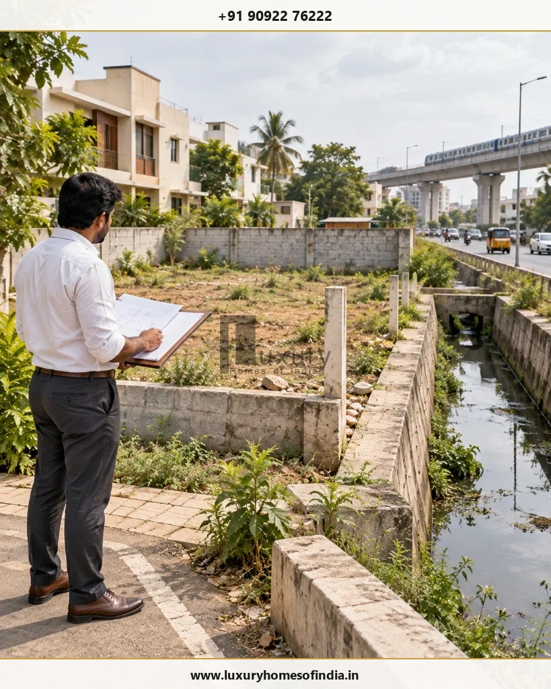

The documents required for building plan approval in Chennai depend on the property's location, the competent authority, the proposed building and the application category. Homeowners generally need ownership documents, applicable land records, an FMB or Town Survey sketch, building drawings and professional details.
Depending on the application, additional records may include an Encumbrance Certificate (EC), approved layout documents, a legal opinion and site-specific No Objection Certificates (NOCs). The Greater Chennai Corporation (GCC) publishes a checklist for applications handled under its jurisdiction, while the Chennai Metropolitan Development Authority (CMDA) provides its own planning-permission process. These requirements should not be treated as interchangeable.
Before submitting an application, verify the property's planning jurisdiction, compare the survey and ownership details, and ask the appropriately registered professional to confirm the current checklist. This guide explains the principal documents, conditional clearances and preparation steps for homeowners planning a new house or villa in Chennai.
Key Takeaways: Chennai Building Approval Paperwork
- Jurisdiction Dictates Document List: GCC handles delegated residential categories within city limits; CMDA retains jurisdiction for special types and master plan scrutiny. Both use distinct checklists and portal endpoints.
- Core Paperwork Trinity: Ownership Title (registered Sale Deed), Revenue Records (Patta / TSLR / Chitta), and Survey Geometry (attested FMB sketch or Town Survey extract).
- 13-Year EC Rule: Greater Chennai Corporation specifies an Encumbrance Certificate covering a continuous 13-year period, issued no earlier than 7 days prior to application date.
- Site-Specific Distance Clearances: Plots within 15m of waterbodies, 30m of railway boundaries, or 50m of Chennai Metro (CMRL) alignments trigger conditional undertakings or mandatory NOCs.
- Sequential Due Diligence: Rectify survey number or extent mismatches across documents before generating CAD drawings to avoid scrutiny rejection.
1. Which authority handles building plan approval in Chennai?
The first step is to establish which authority handles the proposed development. Do not choose a portal solely because the property is described as being in Chennai.
The GCC's published procedure identifies the building categories it processes and directs other categories to CMDA. The applicable route can depend on the building's characteristics, location and current rules.
The appropriate registered architect or engineer should confirm the authority and the exact application category before you assemble the final submission.
2. Essential documents for building plan approval
The following are common starting points for a residential application. This is not a universal mandatory list: the official checklist for the specific application takes precedence.
1. Sale deed or other ownership document
The sale deed, lease deed, power of attorney or other applicable ownership document establishes the applicant's stated interest in the property.
Check the property description, survey number, extent and boundaries against the other records. If the property has changed hands or involves inherited ownership, additional documents may be needed.
2. Patta, Chitta, TSLR or other applicable land records
The relevant revenue or town-survey records help identify the land and its recorded particulars.
Depending on the property and applicable records, these may include Patta, Chitta or Town Survey Land Records (TSLR). The GCC checklist also refers to Adangal details in specified circumstances. Confirm which records apply to the particular property rather than obtaining every document indiscriminately.
3. Field Measurement Book (FMB) or Town Survey sketch
The FMB or Town Survey sketch helps establish the recorded survey boundaries and dimensions.
Compare the sketch with the ownership documents and proposed site plan. Differences in survey references, plot extent or boundaries should be investigated before submission.
4. Encumbrance Certificate (EC)
An EC provides information about registered transactions recorded against the property during the period covered by the certificate. It is useful for reviewing the property's transaction history, but it does not replace a complete title examination.
The GCC's published checklist specifies an EC covering 13 years, obtained no earlier than seven days before the application submission date. This is an authority-specific published requirement; reconfirm the current requirement and timing for your application.
5. Approved layout plan and approval order, where applicable
If the property forms part of a layout, obtain the relevant approval order and approved drawing where required.
Check that the plot number, dimensions, survey references and access correspond to the property under consideration. Layout approval and approval of the proposed building are separate matters.
6. Proposed building drawings and site plan
The registered professional prepares the drawings and other technical information required for the application.
Depending on the proposal, the submission may include the site plan, floor plans, elevations, sections and other prescribed details. The drawings should reflect the site conditions and comply with the applicable development regulations and building rules.
7. Abutting road sketch and access information
The authority may require a sketch or other prescribed details identifying the road adjoining the plot and its access.
Confirm the relevant road details and compare them with the site plan. Do not assume that a road visible on the ground automatically establishes every aspect of lawful or compliant access.
8. Legal opinion, where required
The CMDA portal lists a legal opinion among the mandatory documents for its specified planning-permission process.
Confirm the current format, scope and requirements with the relevant authority and qualified professional.
9. Documents for inheritance, revision or other special circumstances
Additional records may be required depending on the ownership history and application type. Examples include death and legal-heirship certificates, a will or probated will where applicable, and previously approved details for a revision or alteration application.
Obtain the documents relevant to the actual case instead of treating every conditional document as compulsory.
3. Building approval document checklist
Use this preparation checklist to organise the paperwork before submission. It is an organisational aid, not an official application checklist.
Document Preparation Tracker
Track your application dossier readiness in real time
Golden Pre-Submission Rule: Before treating a document as complete, check that it belongs to the correct property, is clearly readable (avoid low-resolution scans), contains the necessary official seals, and meets the current digital upload format requirements of the relevant portal.
4. When might additional NOCs or clearances be required?
Some properties and proposals require additional documentation because of site location, nearby infrastructure or building characteristics.

The GCC's published checklist identifies examples of conditional requirements, including the following. The relevant authority must determine their application to the specific property.
| Site Condition | Requirement to Verify |
|---|---|
| Property near a waterbody, channel or watercourse | Applicable undertaking or other prescribed requirements |
| Proposed culvert across a watercourse | NOC from the responsible government agency, where required |
| Site within the specified distance of railway property | Applicable railway clearance |
| Site near a CMRL alignment | Applicable metro clearance |
| Site in a regulated aviation area | Civil Aviation or other competent authority clearance, where required |
| Proposal requiring fire clearance | Fire and Rescue Services NOC, where applicable |
| Proposal requiring structural certification | Prescribed structural stability documents and professional details |
The GCC checklist refers to a 15-metre distance for a waterbody-related undertaking, 30 metres from a railway property boundary, and 50 metres on either side of a CMRL alignment for specified requirements. These figures should be read within the context of the published checklist and applicable rules—not as universal buffers for all approvals.
Do not decide whether a clearance is needed from a map measurement alone. Confirm the applicable rule, measurement reference, site circumstances and authority instructions.
5. Documents required for CMDA planning permission
For its specified online planning-permission process, CMDA identifies the following documents:
- FMB: Certified copy of the Field Measurement Book sketch.
- Legal opinion: Formal title and ownership opinion by a qualified advocate.
- Combined FMB: Required when multiple adjacent subdivisions or survey parcels form the site.
- Patta, TSLR or PLR: Official revenue registry record as applicable to the location.
- Abutting road sketch: Clear demarcation of access width, road type, and maintenance authority.
- Revision details: Previously approved drawings and sanction numbers for alteration cases.
Official portal: CMDA Planning Permission Portal
Before submitting through the CMDA portal:
- Confirm application route: Ensure the proposal falls under CMDA direct jurisdiction rather than GCC delegated powers.
- Check digital drawing requirements: Adhere to CMDA's CAD layer standards, colour conventions, and plotting scales.
- Verify land-record details: Cross-check survey numbers and boundaries with the proposed site plan.
- Review survey combinations: Confirm whether a combined survey sketch or joint verification is necessary.
- Review submission instructions: Understand the scrutiny fee calculation, query response timeline, and sanction sequence.
The portal's specified list should not be interpreted as an exhaustive list for every possible property or development. Always refer to current application instructions.
6. Documents required for a GCC building permit
The Greater Chennai Corporation's published checklist for planning permission and building permits includes:
- Self-attested ownership documents: Registered sale deed, lease deed, settlement deed, or registered power of attorney.
- Patta and Adangal details: Relevant revenue records in specified rural/peri-urban circumstances.
- Attested FMB / Town Survey sketch: Certified by the competent revenue official or Town Survey team.
- Patta, Chitta or TSLR records: Explicitly mutated in the current owner's name.
- Encumbrance Certificate (EC): Covering a continuous 13-year period and obtained within 7 days prior to application.
- Inheritance records: Death and legal-heirship certificates, or probated will where applicable.
- Site-specific undertakings and NOCs: Buffer declarations and infrastructure clearances where required.
- Structural stability documents: Signed declarations from registered structural engineers.
- Prescribed drawing-related information: Comprehensive architectural plan set reflecting site dimensions.
The precise documents depend on the property, proposed work and application category. Refer to the latest official checklist before preparing the submission.
Official guidance: GCC Town Planning and Building Permit Portal
The GCC describes an online process involving the applicant, registered architect or engineer, application scrutiny, possible clarification requests, assessment and payment of fees, and issuance of the permit. An application acknowledgement is not the same as an issued building permit.
7. How to prepare documents for online submission
A practical preparation sequence is:
- Confirm the authority: Identify whether GCC, CMDA, or DTCP holds jurisdiction over your site.
- Verify the property records: Compare the registered deed, latest Patta/TSLR, and survey sketch for complete consistency.
- Check the planning context: Confirm the applicable layout status, site constraints and road-access width.
- Engage the appropriate professional: Confirm the architect or engineer's active registration and portal credentials.
- Prepare the drawings: Ensure the architectural drawings strictly follow TNCDBR 2019 rules and site measurements.
- Identify conditional clearances: Check whether additional NOCs, undertakings or buffer clearances are required.
- Prepare digital files: Follow the portal's format guidelines (PDF sizes, CAD layers, digital signatures).
- Submit through the correct route: Retain the application reference number and official fee payment challans.
- Monitor the application: Track scrutiny updates, respond promptly to clarification queries, and download the signed permit.
For applications handled through CMDA, follow the dedicated CMDA portal instructions. Do not assume that all application types use an identical workflow.
Official application portals:
8. Common document mistakes that can create rework
Inconsistent property details
A difference in survey numbers, plot extent, boundaries or ownership descriptions across documents may require clarification. Identify discrepancies before submission.
Incomplete EC coverage
Check the period required by the authority and the certificate's issue or retrieval date. The required period and timing must match the current application instructions.
Missing layout records
Where layout documentation is applicable, verify that the approval records relate to the correct plot and development.
Drawings that do not match the site
The proposed drawings should reflect the recorded property information and actual site conditions. Unresolved discrepancies can complicate scrutiny.
Missing signatures or registration details
Confirm that drawings and certificates carry the signatures, seals and registration information required for the particular application.
Overlooking conditional clearances
Review the property's location and proposal against the applicable rules. Do not assume that all sites require the same NOCs—or that no clearance is needed because the project is a private residence.
A document review before submission can help identify issues that might otherwise require correction later.
9. How homeowners can prepare before finalising a house design
For a new house or luxury villa, document preparation should begin before major design decisions are finalised.
A sensible preparation sequence is to:
- Verify ownership and the relevant land records.
- Confirm the property's planning jurisdiction and applicable layout status.
- Review site dimensions, access and potential regulatory constraints.
- Engage the appropriate registered professional.
- Develop the architectural proposal in line with the applicable requirements.
- Assemble the documents and any required conditional clearances.
- Submit the application through the correct official route.
- Confirm that the required permission has been granted before starting construction.
This sequence helps homeowners bring property documentation, architectural planning and regulatory review together early. It does not guarantee approval, eliminate all objections or replace advice from qualified professionals.
For a homeowner planning a villa, this early review is particularly useful because the proposed design should be considered alongside the property's documented extent, access and applicable development requirements.
Frequently asked questions
Common starting documents include the ownership deed, applicable land records, FMB or Town Survey sketch, building drawings and professional details. An EC, legal opinion, approved layout records and additional clearances may be required depending on the authority and application category.
The GCC's published checklist specifies an EC covering 13 years and obtained within the stated period before submission. Confirm the current requirement for your specific application rather than assuming the same rule applies to every authority.
No. Patta is one of the land records used in the application process. Ownership documents, survey records, drawings and other prescribed documents may also be required.
Where layout approval records are applicable, the relevant order and drawing may be needed to establish the plot's planning status. Confirm the requirement for the specific property and application.
No. Their published procedures and checklists differ. Some documents overlap, but the appropriate authority and application category determine the requirements.
No. Additional clearances depend on the property's location, the proposed development and the applicable rules. Check the current requirements for the actual site.
The official procedures provide for registered professionals to prepare and submit applications in the relevant processes. Confirm the professional's registration and eligibility for the specific application route.
No. Uploading documents or receiving an acknowledgement does not establish that permission has been granted. Confirm that the required approval and permit have been validly issued before commencing construction.
Conclusion
Preparing the right documents is an important part of building plan approval in Chennai. Ownership records, land-survey information, proposed drawings and any applicable additional clearances should be reviewed together before submission.
For homeowners planning a new house or luxury villa, the practical starting point is to verify the property records, identify the competent authority and use its current application checklist. This allows design decisions and documentation to be considered together rather than treating approval paperwork as a final administrative step.
At Luxury Homes of India, homeowners can use this preparation framework when discussing plot information, architectural requirements and construction goals for a proposed home.
Planning a home in Chennai?
Discuss your plot, design requirements and construction goals with Luxury Homes of India before finalising your project.
Consult with LHI Specialists →Written by: Luxury Homes of India Editorial
Reviewed by: LHI Technical Planning & Architectural Advisory
Disclaimer: This article provides general educational information and is not legal or regulatory advice. Official requirements, application procedures and statutory clearances may change. Verify the current checklist with the competent authority and an appropriately qualified professional before submitting an application.